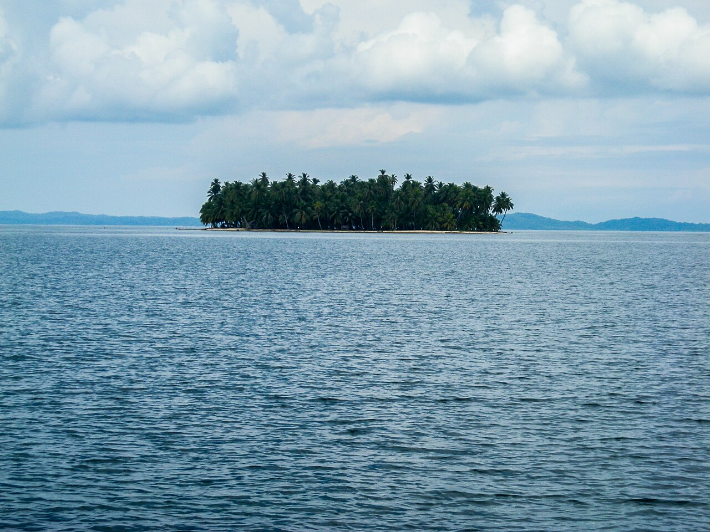

Por qué Latinoamérica
Why Latin America
El argumento para mudarse, comprar o construir al sur, y por qué Panamá es donde ese argumento realmente se sostiene.
The case for moving, buying, or building south, and why Panama is where most of that case actually holds up.

La mayoría de las personas que llegan a Panamá no salieron con la intención de mudarse a Latinoamérica. Salieron huyendo de un número. La factura del impuesto predial. La calefacción de enero. Un plan de retiro que dejó de funcionar hace unos años sin que nadie lo dijera en voz alta. Latinoamérica es donde esa aritmética vuelve a tener sentido, y Panamá es donde lo tiene sin los costos habituales.
Most people who land in Panama did not set out to move to Latin America. They set out to escape a number. A property tax bill. A January heating bill. A retirement plan that quietly stopped working a few years ago. Latin America is where that math starts to make sense again, and Panama is where it makes sense without the trade-offs that usually come attached.
Estoy construyendo Sora Casas aquí, en las tierras altas de Chiriquí y en la costa de Azuero, para ayudar a compradores extranjeros a hacer bien esta parte: encontrar tierra con título limpio y poner una casa encima. Ese trabajo significa que escucho las mismas preguntas en casi cada primera llamada. Las respuestas honestas son todo el argumento, y aquí están.
I'm building Sora Casas here, in the Chiriquí highlands and down on the Azuero coast, to help foreign buyers do this part well: find land that actually has clean title, and put a home on it. That work means I hear the same handful of questions on almost every first call. The honest answers to those questions are the whole argument, so here they are.
Tu dinero rinde más, y se mantiene en dólaresYour money goes further, and it stays in dollars
La canasta básica más barata es real, pero es la parte menos interesante. Hay tres cosas que importan más.
The cheaper grocery bill is real, but it's the least interesting part. Three other things matter more.
Panamá funciona con el dólar estadounidense desde 1904. Fijas el precio de tu casa, pagas al constructor y guardas tus ahorros en el mismo dinero que ya usas. No hay un tipo de cambio que le vaya comiendo al presupuesto, ni el riesgo de despertar y ver que la moneda perdió un tercio de su valor de la noche a la mañana. Ese último es la trampa que ha quemado a compradores en Argentina y varios de sus vecinos durante años.
Panama runs on the US dollar, and has since 1904. You price your house, pay your builder, and keep your savings in the same money you already use. There's no exchange rate quietly eating your budget, and no risk of waking up to a currency that lost a third of its value overnight. That last one is the trap that has burned buyers in Argentina and a few of its neighbors for years.
Panamá además solo grava el dinero que ganas dentro de Panamá. Una pensión, los ingresos de tus inversiones en tu país de origen, el sueldo que una empresa extranjera te paga por trabajo remoto: Panamá no los toca. Tu país de origen puede que sí los grave. Si eres americano, el IRS te sigue a donde vayas. Pero Panamá no agrega una segunda factura encima de la primera.
Panama also only taxes money you earn inside Panama. A pension, income from your investments back home, a paycheck a company abroad sends you for remote work: Panama leaves all of it alone. Your home country might still tax it. If you're American, the IRS follows you wherever you live. But Panama doesn't stack a second bill on top of the first.
Y si te mudas aquí como jubilado, los descuentos para adultos mayores no son una cortesía que un negocio puede retirar. Están escritos en la ley: descuentos en vuelos, comidas, visitas médicas, servicios y entradas de cine, para cualquiera que tenga la edad mínima.
And if you move here on a pension, the senior discounts aren't a courtesy a business can take away. They're written into the law: money off flights, restaurant meals, doctor visits, utility bills, and movie tickets, for anyone past the qualifying age.
No tienes que desaparecer para hacerloYou don't have to disappear to do it
Esta es la pregunta que decide todo en silencio, y la mayoría la hace de última. Portugal queda casi un día de vuelo con una zona horaria difícil para la familia en Estados Unidos. El sudeste asiático queda aún más lejos. Cuando nace un nieto o se enferma un padre, esa distancia se convierte en un costo real que pagas una y otra vez.
This is the question that quietly decides everything, and most people ask it last. Portugal is most of a day away and a hard time difference from family back in the States. Southeast Asia is further still. When a grandkid is born or a parent gets sick, that distance turns into a real cost you pay over and over.
Ciudad de Panamá está a unas tres horas de vuelo de Miami y a menos de seis de Nueva York o Toronto. El país funciona en hora del Este y nunca cambia sus relojes, así que durante medio año es la misma hora que la costa este de Estados Unidos. Puedes tener una reunión de trabajo en la mañana, estar en la playa al mediodía y aun así leer un cuento por video en la noche. Estar cerca es lo que convierte todo lo demás en esta lista de teórico a utilizable.
Panama City is about a three hour flight from Miami, and under six from New York or Toronto. The country runs on Eastern time and never changes its clocks, so for half the year it's the same hour as the East Coast. You can take a morning call with the office, be on the beach by lunch, and still read a bedtime story over video that night. Staying close is the thing that makes everything else on this list usable instead of theoretical.
La residencia está escrita, no se entrega según el humor de alguienResidency is written down, not handed out on a whim
En gran parte de la región, el camino para quedarse legalmente es lo suficientemente vago como para que termines dependiendo de un intermediario y esperando que resulte. Las rutas de Panamá están escritas, y cuál te conviene depende de si traes ingresos estables o capital.
In a lot of the region, the path to legally staying is vague enough that you end up leaning on a fixer and hoping it works out. Panama's routes are spelled out, and which one fits you comes down to whether you bring steady income or a chunk of capital.
- La ruta Pensionado. Si tienes una pensión de al menos mil dólares mensuales de por vida, este es generalmente el camino más simple, y es el que viene con esos descuentos para adultos mayores.
- The Pensionado route. If you have a pension of at least a thousand dollars a month for life, this is usually the simplest path, and it's the one that carries those senior discounts.
- La ruta Naciones Amigas. Si prefieres calificar a través de una propiedad, comprar bienes raíces titulados por encima de cierta cantidad te pone en camino hacia la residencia permanente.
- The Friendly Nations route. If you'd rather qualify through property, buying titled real estate above a set amount puts you on a path toward permanent residency.
- La ruta de inversionista. Para compras de bienes raíces más grandes. El mínimo ya fue subido una vez y se espera que suba de nuevo, así que el número de hoy es probablemente el más bajo que verás.
- The investor route. For larger real estate purchases. The minimum has already been raised once and is set to go up again, so today's number is probably the lowest you'll ever see it.
El punto no es cuál gana. Es que puedes leer la regla, cumplirla en papel y saber exactamente dónde estás. Eso es más raro de lo que parece.
The point isn't which one wins. It's that you can read the rule, meet it on paper, and know exactly where you stand. That is rarer than it sounds.
Eliges el clima manejando cuesta arriba o cuesta abajoYou pick your weather by driving up or down a hill
Panamá está cerca del ecuador, así que no hay invierno que esperar. Lo que tienes en cambio es altitud. Sube y refresca. Baja y calienta. Eliges el clima que quieres y compras en la altitud que te lo da.
Panama sits close to the equator, so there's no winter to wait out. What you get instead is altitude. Drive up and it cools off. Drive down and it warms up. You choose the climate you want, then buy at the elevation that gives it to you.
Boquete, en las tierras altas de Chiriquí a unos 1,200 metros, tiene días de unos 22°C con noches frescas. La gente lo llama primavera eterna, y por eso ahí está la mayor comunidad expat establecida fuera de Ciudad de Panamá. Sube más, a Volcán, y es más fresco, más tranquilo y más barato. Baja a la costa alrededor de Pedasí y cambias el suéter por calor seco, surf y la zona con menos lluvia del país. Estos lugares están a unos noventa minutos entre sí. La mayoría de los compradores llegan seguros de que quieren la playa y se van enamorados de las montañas, o al revés, y por eso exactamente les decimos que vayan a pararse en el terreno antes de decidir nada.
Boquete, up in the Chiriquí highlands at around four thousand feet, runs in the low seventies by day with cool nights. People call it eternal spring, and it's why the biggest established expat community outside Panama City sits there. Go higher, to Volcán, and it's cooler, quieter, and cheaper. Drop down to the coast around Pedasí and you trade the sweater for dry heat, surf, and the least rain in the country. These places are about ninety minutes apart. Most buyers show up sure they want the beach and leave having fallen for the mountains, or the other way around, which is exactly why we tell people to go stand on the land before they decide anything.
Lo que nadie pone en el folletoThe part nobody puts in the brochure
Si una guía para mudarse aquí suena como todo ventajas, alguien la escribió para venderte algo. La versión honesta viene con tres advertencias.
If a guide to moving here reads like all upside, someone wrote it to sell you something. The honest version comes with three warnings.
La grande: no toda la tierra aquí tiene título. Mucha propiedad cambia de manos como derecho posesorio. Parece propiedad y a menudo cuesta como propiedad, pero no es título registrado. No se puede asegurar, es difícil de hipotecar y puede ser un dolor de cabeza vender después. El paso más importante en cualquier compra aquí es que un abogado confirme, en el registro público, que lo que estás comprando es título registrado real, antes de mover un solo dólar. Es lo primero que verificamos, y no ponemos a un cliente en un lote hasta que esté limpio.
The big one: not all land here is titled land. A lot of property changes hands as "rights of possession," which in Spanish is derecho posesorio. It looks like ownership and often costs like it, but it isn't registered title. You can't insure it, it's hard to borrow against, and it can be a headache to sell later. The most important step in any purchase here is a lawyer confirming, in the public registry, that what you're buying is real registered title before a single dollar moves. It's the first thing we check, and we won't put a client on a lot until it clears.
Segundo, el papeleo es lento y funciona con relaciones, no con un sitio web. Los permisos y las conexiones de servicios tardan más de lo que espera un norteamericano, y las personas que ya conocen al inspector y al topógrafo son las que realmente hacen avanzar las cosas.
Second, the paperwork is slow, and it runs on relationships rather than a website. Permits and utility hookups take longer than a North American expects, and the people who already know the inspector and the surveyor are what actually move things along.
Tercero, necesitas a esa gente. Los compradores que salen perjudicados son los que intentaron hacer todo por correo electrónico desde miles de kilómetros de distancia, confiando en quien respondiera. Los que les va bien tenían a alguien sobre el terreno en quien confiaban antes de enviar dinero.
Third, you need those people. The buyers who get burned are the ones who tried to do everything by email from two thousand miles away, trusting whoever wrote back. The ones who do well had someone on the ground they trusted before they sent any money.
Por qué Panamá y no otro lugar en la regiónWhy Panama, and not somewhere else in the region
Todo lo anterior es el argumento para la región. Muchos países tienen una o dos de estas cosas. Panamá las tiene todas a la vez, y además agrega lo que te deja dormir tranquilo: una economía estable en dólares con sistema bancario sólido, un historial político más tranquilo que el de la mayoría de sus vecinos, y un país construido como hub, con las mejores conexiones aéreas de Centroamérica y un canal que mantiene la economía funcionando sin importar quién esté en el gobierno. No estás apostando a una frontera. Estás comprando en la parte de Latinoamérica que ya hizo el trabajo aburrido de ser predecible.
Everything above is the case for the region. Plenty of countries have one or two of these things. Panama has all of them at once, and then adds the parts that let you sleep at night: a stable, dollar based, properly banked economy, a calmer political track record than most of its neighbors, and a country built as a hub, with the best flight connections in Central America and a canal that keeps the economy running no matter who's in office. You're not betting on a frontier. You're buying into the part of Latin America that already did the boring work of being predictable.
Ese es el argumento, con sus defectos y todo. Si es el intercambio que buscas, la pregunta real no es "Panamá, sí o no". Es montañas o costa, comprar o construir, y si el lote que te gusta realmente tiene título limpio. Esa última parte es lo que hacemos nosotros.
That's the case, warts and all. If it's the trade you're looking for, the real question isn't "Panama, yes or no." It's mountains or coast, buy or build, and whether the lot you like actually has clean title. That last part is the thing we do.
¿Pensando en mudarte?
Thinking about the move?
Empieza con la guía de costos de construcción y las notas de mercado, o cuéntanos qué estás evaluando y te damos una respuesta directa, incluyendo cuando la respuesta es "todavía no".
Start with the build-cost guide and the market notes, or tell us what you're weighing and we'll give you a straight answer, including when the answer is "not yet."
Explorar Sora Casas →Explore Sora Casas →